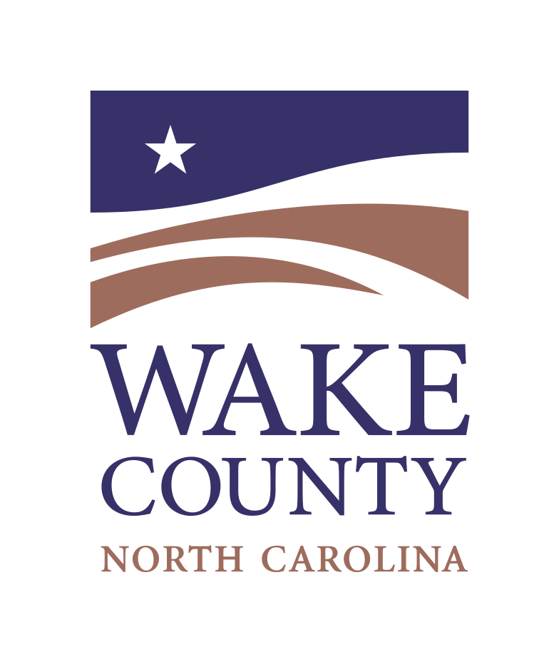
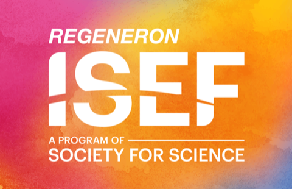
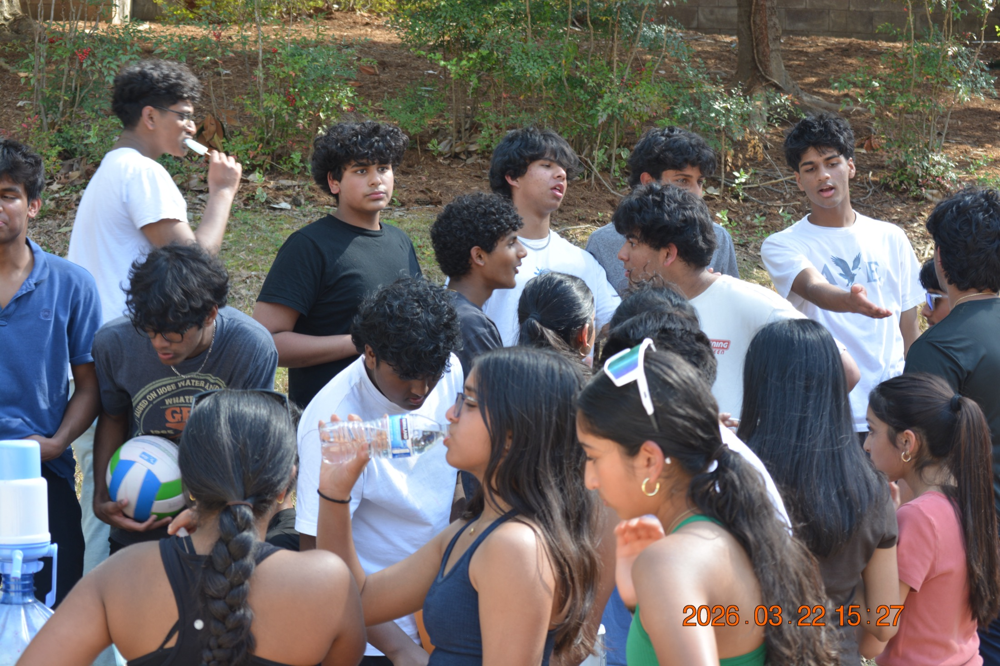
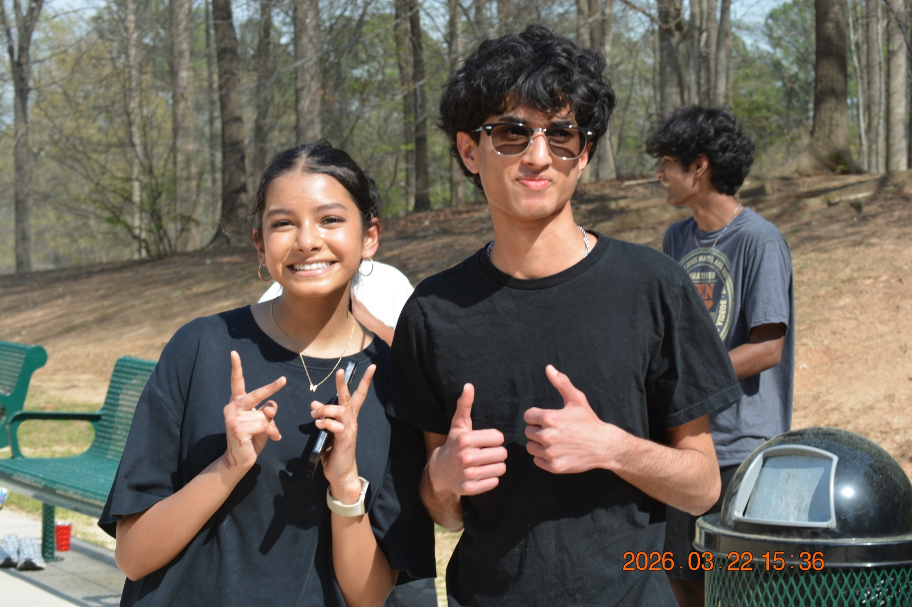
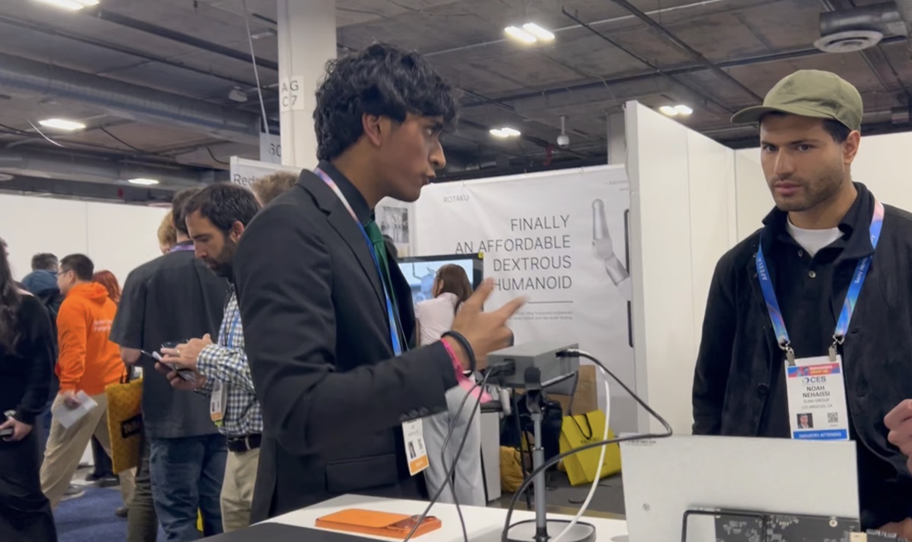
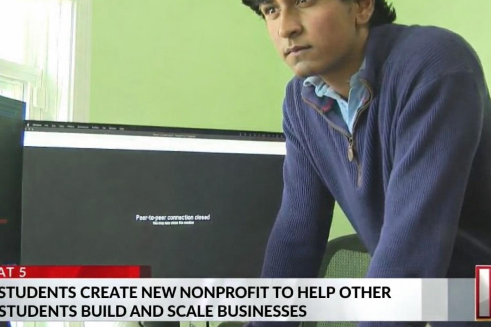

501(c)(3) certified organization
For students and founders who want real work
Build real startups. Earn real equity.
Students join active startups and work on real tasks. Founders get focused support from people ready to build.
Credibility
Built with real startup ecosystem connections.
Student execution teams supporting real startups
Connected through startup, innovation, and challenge ecosystems


Real startup work
Ownership tied to contribution
Useful experience before graduation
How it works
Three simple steps.
01
Apply
Tell us your skills, your preferred role, and your weekly availability.
02
Match
We place you into a startup team where you can contribute right away.
03
Build + Own
You ship real work, build a track record, and earn ownership through contribution.
Platform showcase
How the platform works from signup to startup results.
Scroll down and the panel on the left explains each step in plain language.
Inside the platform
What students and founders use every week.
Weekly Plan Board
A shared board that shows goals, owners, blockers, and due dates.
Team Matching
Matches people to startups based on skills, role fit, and availability.
Progress Tracking
Shows what has shipped, what is late, and what needs support.
Contribution History
Keeps a record of who delivered what so ownership decisions are clear.
Built for
Students, founders, and partner organizations.
Students
Build practical startup experience and a strong portfolio before graduation.
Founders
Recruit contributors who can help you hit weekly startup goals.
Partners
Support a pipeline of students who can contribute in real startup settings.
Next step
Explore ideas. Then execute.
Browse current startup ideas or apply directly.
Gallery
Real moments from the Capture Success community.
From campus events to startup floors and press coverage.
Live Community
Students + founders
Execution-first culture
Nonprofit, real outcomes

Community Day

Conference
Press